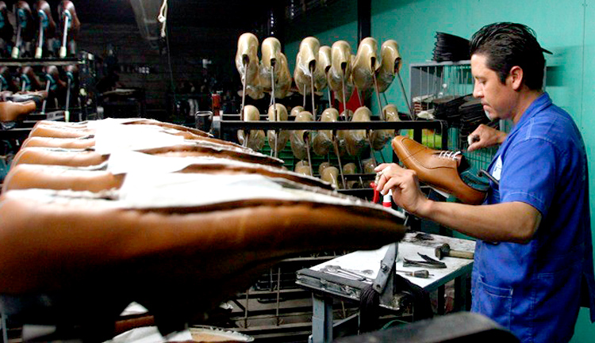

Pisa con comodidad, camina con confianza.
Zapateria Bicentenario

Mundo del zapato
Como se hace un zapato
- Qué conocemos como un buen zapato?
- Cómo se hace un zapato?
- Las herramientas del zapatero
- El manual del zapato
Las medidas y el pie
- Toma de medidas
- El pie: Contorni, longitud, anchura y volumen
- El pie: Huella y perspectiva
- El puente y las malformaciones mas frecuentes
- Sistema óseo y misculatura del pie
- Numeración del ancho
- La documentación del pie
- Numeración del calzado (francesa, ingelsa, americana y métrica)
La Horma
- Para qué sirven las hormas
- Zapatero a tus zapatos
- Las hormas simétricas y asimétricas
- Elaboración manual y preparación mecánica de una horma a medida
- Copia preliminar, definitva y últimos toques de una horma
- El material de la horam
- Hormas a medida (método de sustracción adición y hormas corregidas)
- Caractrísticas de las hormas, prueba y duración
Tipos de zapatos
- El zapato a medida
- El zapato hace a la persona
- Moda en los pies
- Oxford
- Full-Brogue y semi-Brogue
- Blucher